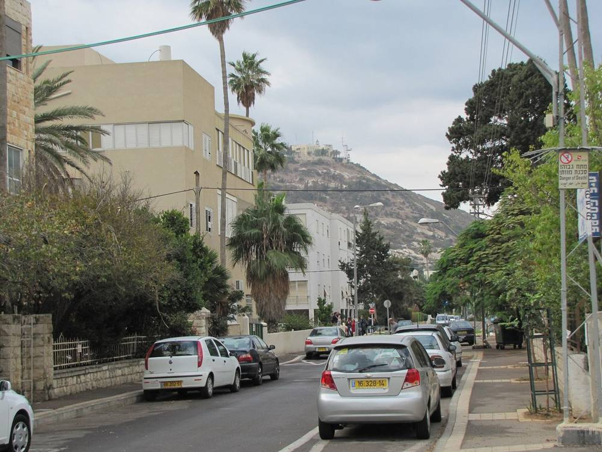
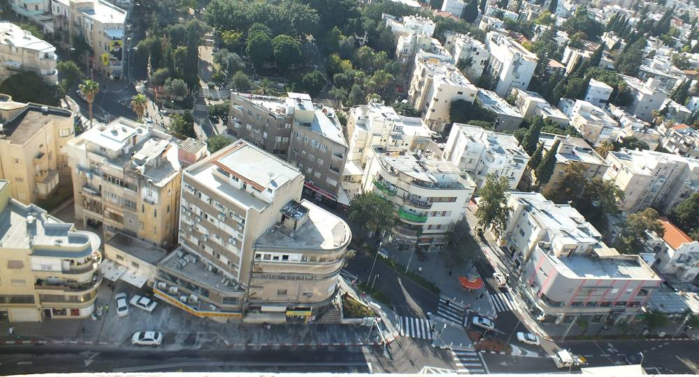
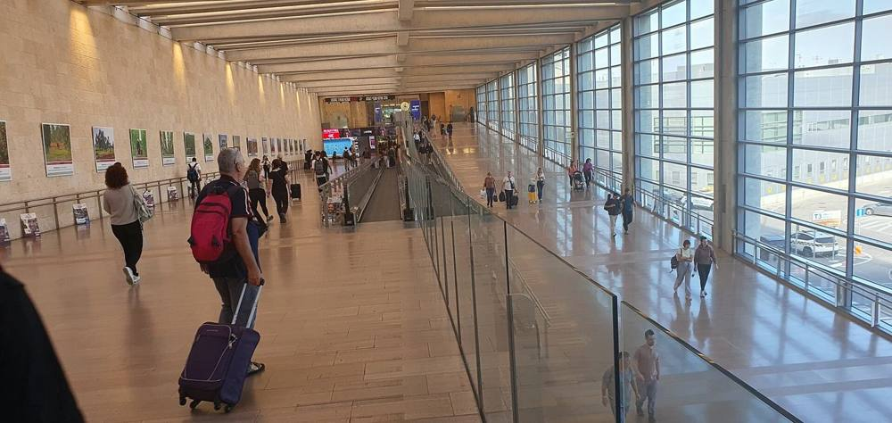
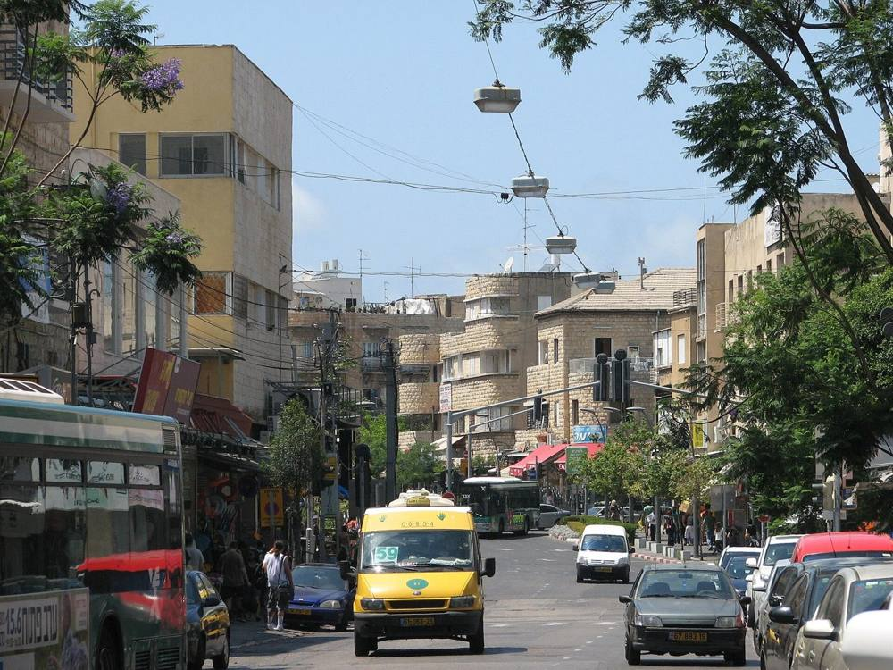
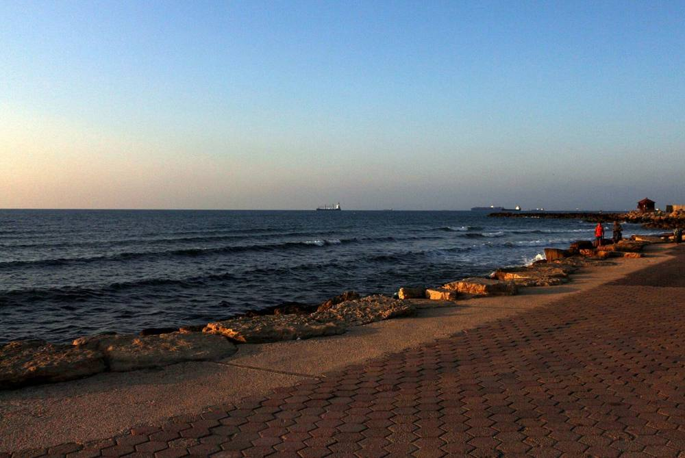

קונספט לדוגמה שנבנה עבור עידן – שירותי ביטוח ופיננסים, הולנדר זכריה M.Sc · זה אינו האתר הרשמי של העסקA sample concept built for Idan Insurance & Finance Services, Zecharia Hollander M.Sc · This is not the business’s official website
ביטוח רכב · חובה, מקיף וצד ג׳ · ביטוח דירה · ביטוח משכנתא · נסיעות לחו״ל · ביטוחי בריאות · ביטוחי חיים · תאונות אישיות · ביטוח עסקים · פנסיה וגמל · ביטוחים מיוחדים · Car insurance · Compulsory, comprehensive & third party · Home · Mortgage · Travel abroad · Health · Life · Personal accident · Business · Pension & provident funds · Special cover ·
שני דורות, משרד אחד.Two generations, one office.
אב ובן, ולצידם צוות של חתמות ועובדים מנוסים בענף.A father and son, with a team of underwriters and experienced staff beside them.
זכריה הולנדר M.ScZecharia Hollander M.Sc
מנהל את הסוכנות. מהנדס בעל תואר שני, מורשה בכל ענפי הביטוח וחבר פעיל בלשכת סוכני הביטוח.Runs the agency. An engineer with a master’s degree, licensed in every branch of insurance and an active member of the Israel Insurance Agents Association.
עידן הולנדר B.AIdan Hollander B.A
מנהל את אגף ביטוח חיים ובריאות. תואר ראשון בביטוח ובמנהל עסקים, תואר CLU בביטוח חיים והסמכה לייעוץ השקעות.Heads the life and health department. A degree in insurance and business administration, the CLU designation in life insurance and an investment-advice licence.
לכל עידן בחיים.For every era of life.
1 / 8

תמונה להמחשה · בת גליםIllustrative · Bat Galim
הרכב
חובה, מקיף וצד ג׳. התחום שהסוכנות מתמחה בו.Compulsory, comprehensive and third party. A field the agency specialises in.

תמונה להמחשה · הדרIllustrative · Hadar
הבית
ביטוח דירה, מבנה ותכולה. גם בו הסוכנות מתמחה.Home insurance, structure and contents. Another of the agency’s specialities.
מתוך האתר של הסוכנותFrom the agency’s website
המשכנתא
ביטוח משכנתא, לצד הבית החדש.Mortgage insurance, alongside the new home.
מתוך תמונות הסוכנות בגוגלFrom the agency’s Google photos
המשפחה
בריאות, חיים ותאונות אישיות, באגף של עידן.Health, life and personal accident, in Idan’s department.

תמונה להמחשה · נתב״גIllustrative · Ben Gurion Airport
הנסיעה
ביטוח נסיעות לחו״ל, לפני שממריאים.Travel insurance, before take-off.

תמונה להמחשה · רחוב הרצלIllustrative · Herzl Street
העסק
ביטוח עסקים וביטוחים מיוחדים.Business insurance and special cover.

תמונה להמחשה · טיילת בת גליםIllustrative · Bat Galim promenade
החיסכון
פנסיה, קופות גמל וקרנות השתלמות.Pensions, provident and study funds.
תמונה להמחשה · מפרץ חיפהIllustrative · Haifa Bay
חיפה
הכול ממשרד אחד, בשדרות המגינים.All from one office, on Sderot HaMeginim.
הפוליסה יוצאת מכאן.The policy is issued here.
ברכב ובדירה הסוכנות פועלת כסוכנות חיתום עבור כמה חברות ביטוח, ומורשית להפיק פוליסות בעצמה, במשרד.For cars and homes the agency acts as an underwriting agency for several insurers, licensed to issue policies itself, in its own office.
5000+
פוליסות מטופלות בשנהpolicies handled a year
700+
תביעות מטופלות בשנהclaims handled a year
97%
מהלקוחות מחדשיםof clients renew
הנתונים מתוך האתר של הסוכנותFigures from the agency’s own website
פוליסהPolicy
איך עובדים איתנו.How we work with you.
שיחה או פגישהA call or a meetingבודקים יחד מה השתנה אצלכם ומעדכנים.We look together at what has changed for you, and update.
השוואה בין החברותComparing the insurersבדיקה מול חברות הביטוח, למחיר ולתנאים.A check across the insurers, for price and terms.
מנהל/ת תיק אישיYour own file managerאדם אחד במשרד שמכיר אתכם, בטלפון, במייל ובוואטסאפ.One person at the office who knows you, by phone, email and WhatsApp.
ליווי בתביעהSupport with a claimמנהל תביעות אישי, בליווי וייעוץ של סוכן ביטוח.A personal claims manager, with an insurance agent advising.
שירות מקצועי אמין וישר תוך הצגת הדברים בצורה נבונה והשתדלות גדולה כלפי הלקוח לשביעות רצונו המלאה. זה לא רק ביטוח הולנדר זה אמינות, מקצועיות ועשייה ברוכה ללא סיפורי אגדות רק מציאות ללא ניפוח אלא כפי שהיא בדיוק.
Professional, reliable and honest service, explaining things wisely and going to great lengths for the client’s full satisfaction. Hollander isn’t only insurance, it’s reliability, professionalism and good work, no fairy tales, just reality without inflation, exactly as it is.
כבר שנים שאנחנו לקוחות מרוצים. תמיד מקבלים את הכיסוי הביטוחי המתאים ביותר עבורינו… אירה מדהימה ועוזרת בכל בקשה.
We’ve been happy clients for years. We always get the insurance cover that suits us best… Ira is amazing and helps with every request.
קיבלתי שירות מעולה מבחינת מקצועיות, מהירות ודיוק. אני רק רוצה להביע את תודתי העמוקה לאירה. הייתי מרוצה מאוד…
I received excellent service in professionalism, speed and accuracy. I just want to express my deep thanks to Ira. I was very pleased…
שלום רב, אני מבקש להודות למאיה על השירות היעיל, האדיב ומהיר.
Hello, I’d like to thank Maya for the efficient, courteous and quick service.
שאלות ששואלים אותנו.Questions we’re asked.
עם אילו חברות ביטוח אתם עובדים?Which insurers do you work with?
הסוכנות קשורה עם רוב חברות הביטוח בארץ, וכך אפשר להשוות ביניהן.The agency works with most of Israel’s insurance companies, so they can be compared.
מי מלווה אותי בתביעה?Who helps me with a claim?
מנהל תביעות אישי, בליווי וייעוץ של סוכן ביטוח. ברכב וברכוש מטפלים גם בתביעות צד ג׳, כולל הגשת תביעות לבתי משפט, בגיבוי עורכי דין ושמאים שעובדים עם המשרד.A personal claims manager, with an insurance agent advising. For cars and property the office also handles third-party claims, court filings included, backed by lawyers and assessors who work with it.
אפשר לבדוק את הביטוחים שכבר יש לי?Can you look at the cover I already have?
כן. בביטוח חיים, בריאות והסדרים פנסיוניים, מומחה בודק את המצב הקיים ונותן חוות דעת מקצועית: לשפר, לשמר או לשנות.Yes. For life, health and pension arrangements, a specialist reviews what you have and gives a professional opinion: improve, keep or change.
מה זה סוכנות חיתום?What is an underwriting agency?
בענפי הרכב והדירה הסוכנות פועלת כסוכנות חיתום עבור כמה חברות ביטוח, ומורשית להפיק פוליסות באופן עצמאי במשרדיה.For cars and homes the agency underwrites on behalf of several insurers and is licensed to issue policies independently at its offices.